个人习惯了用语雀写笔记，想转到个人博客做推广发现没有合适的工具帮助，且语雀的图床不允许外部引用，就写了这个脚本来将图片下载并保存到本地，借助的是DeepSeek，非常厉害
项目地址：https://github.com/suhaynn/yuque-to-hexo
使用教程
初始化环境
初次使用请修改博客根路径为你本地hexo博客的根路径
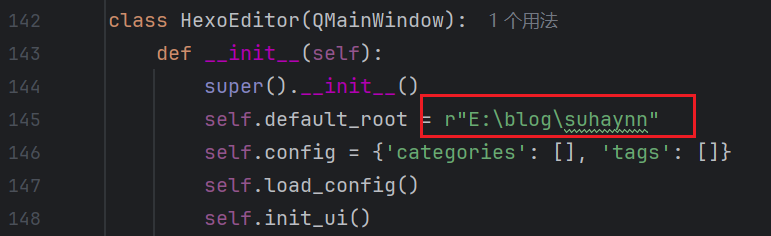
运行脚本之后也能在图形化界面修改
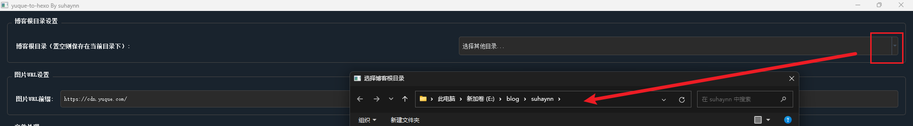
修改hexo配置
在博客根路径的**_config.yml**中添加以下配置，使所有资源路径不使用绝对路径：
1 | relative_link: true |
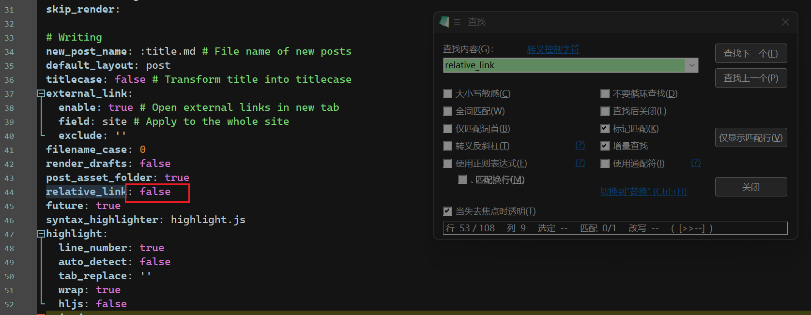
自动为每篇文章创建资源文件夹
1 | post_asset_folder: true |
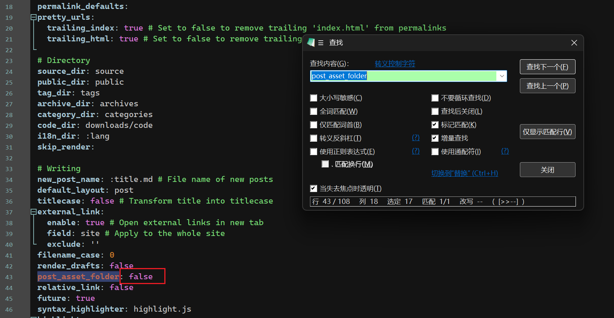
导出语雀文档
保存为markdown格式，路径任意
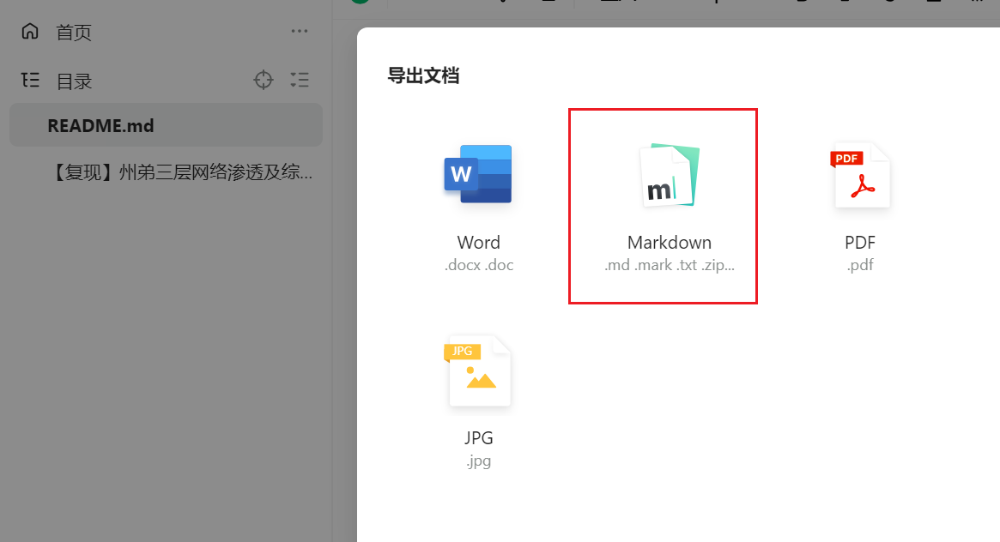
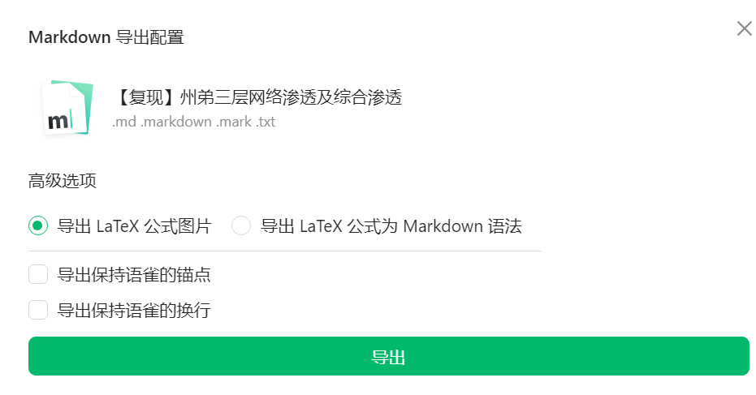
运行脚本
输出路径
结果输出两项内容，一个是语雀图床替换之后的md文件，另一个是保存图片的同名文件夹
- 自定义博客根路径之后会默认保存在\source_posts目录下
- 置空则保存在你的md文件所在目录
- 也可自定义位置将这两项内容保存任意位置
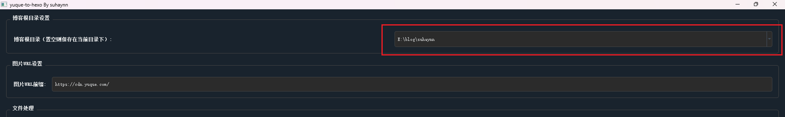
拖入MD文件
hexo 文章开头需要固定格式，需要文章标题和日期，这里我多加了文章分类和标签，使用英文逗号隔开！
注意：
- 填写分类时会从博客根路径的\public\categories目录读取历史分类，可选中历史分类或者手动输入添加分类，逗号隔开，层级分类，从左到右级别依次递减
- 填写标签时会从博客根路径的\public\tags目录读取历史标签，可选中历史标签或者手动输入添加标签，逗号隔开
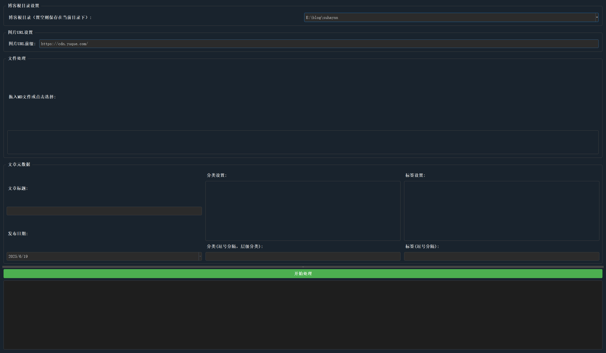
开始处理
有百分比进度条和下载日志
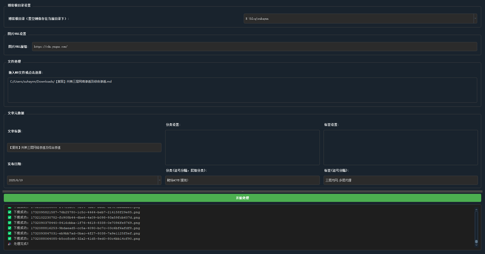
可以看到已经上传到我的博客_posts目录下了
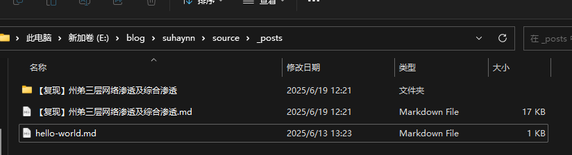
MD文件可正常解析图片
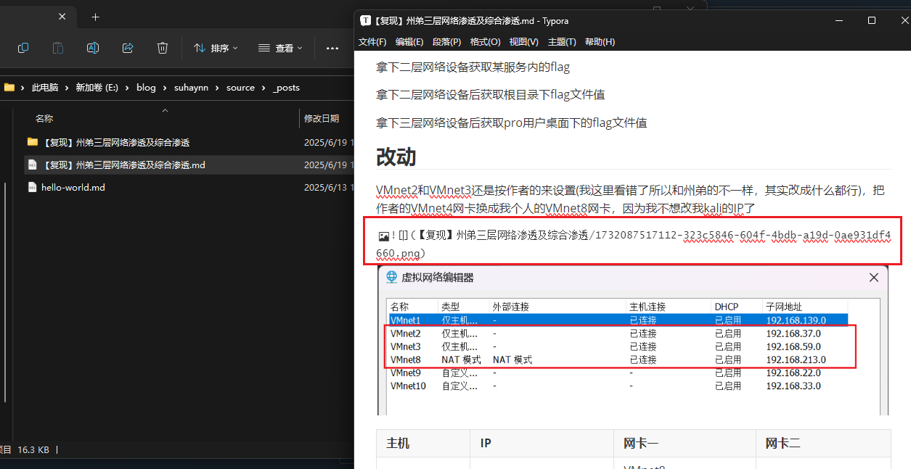
本地服务启动
1 | hexo clean |
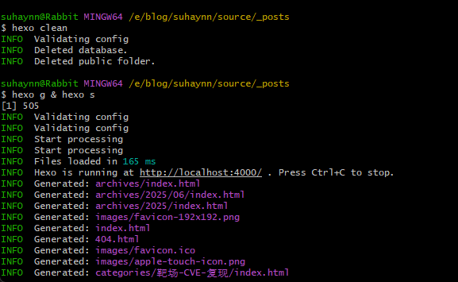
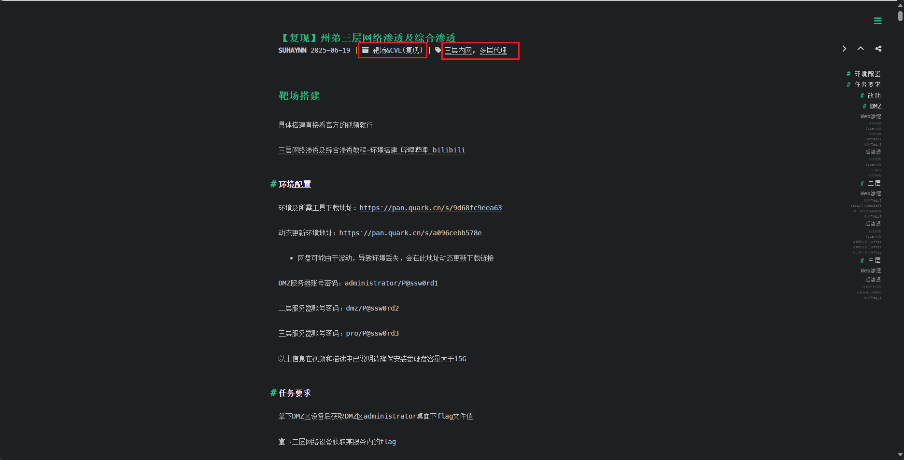
没什么问题就可以同步到博客了
1 | hexo d |
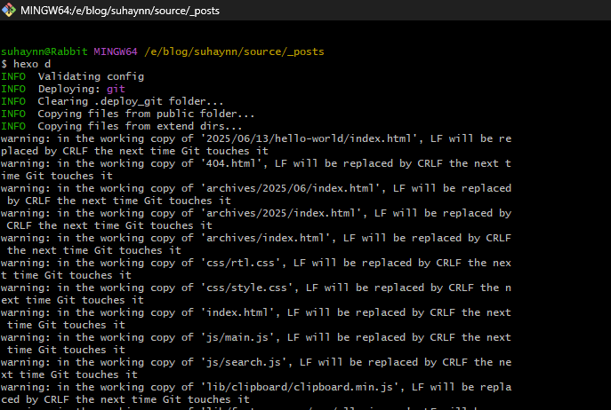
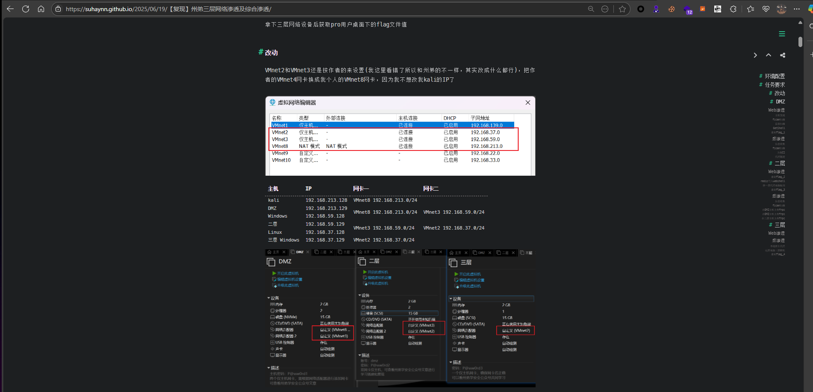
版本更新
1.0.0
支持单md文件下载 不支持多文件下载
不支持多线程
目前只支持文件拖拽上去